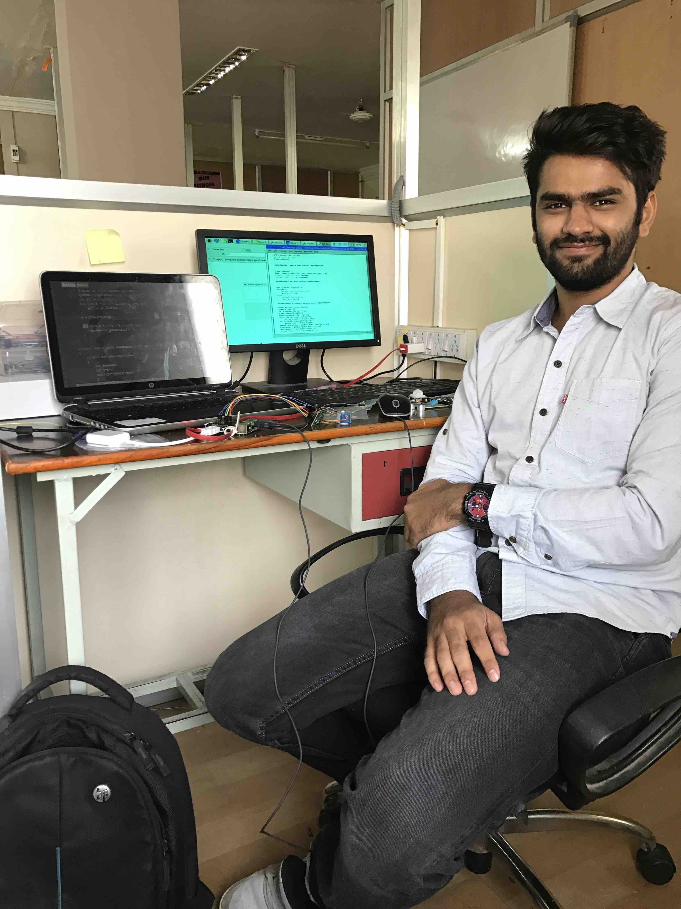

Software Developer Intern - Summary
- Developed visualizations for waste bins IoT data acquired from sensors across Hyderabad, India, enabling customers to track bin cleanliness and the overall city cleanliness. Deployed visualizations on Axelta's Osmosis Platform.
- Created Android applications to provide real-time access and tracking of IoT sensor data attached to customers' devices.